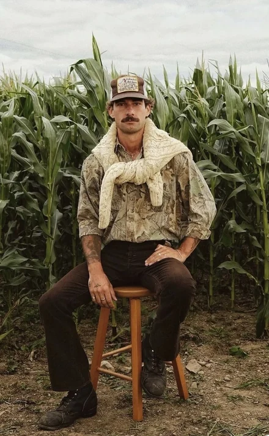
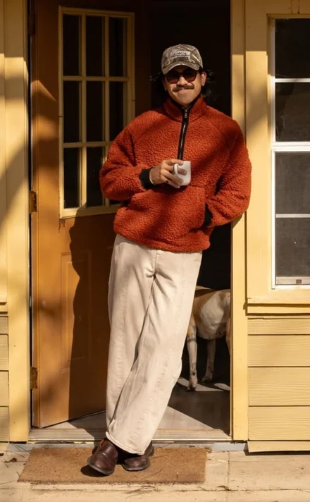
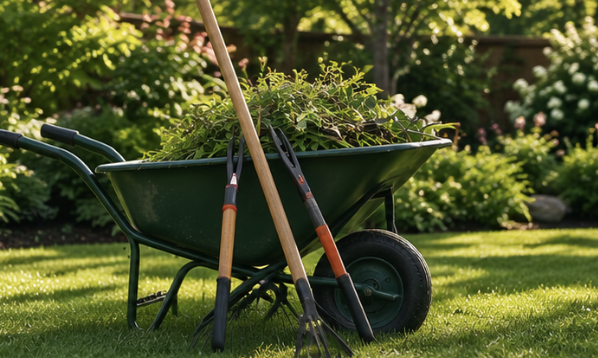
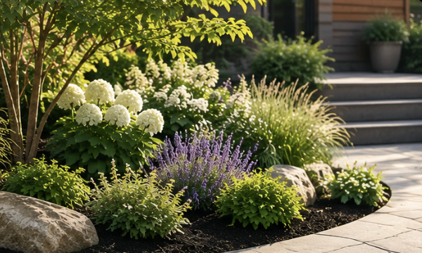
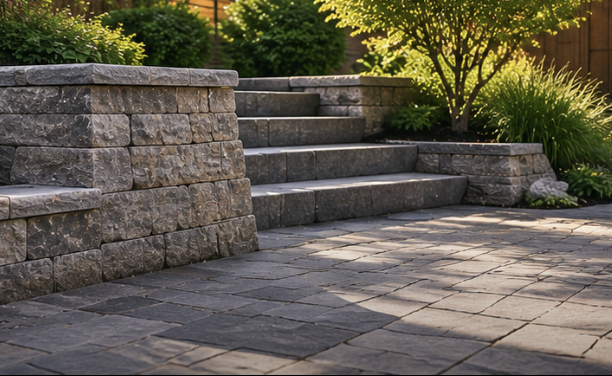
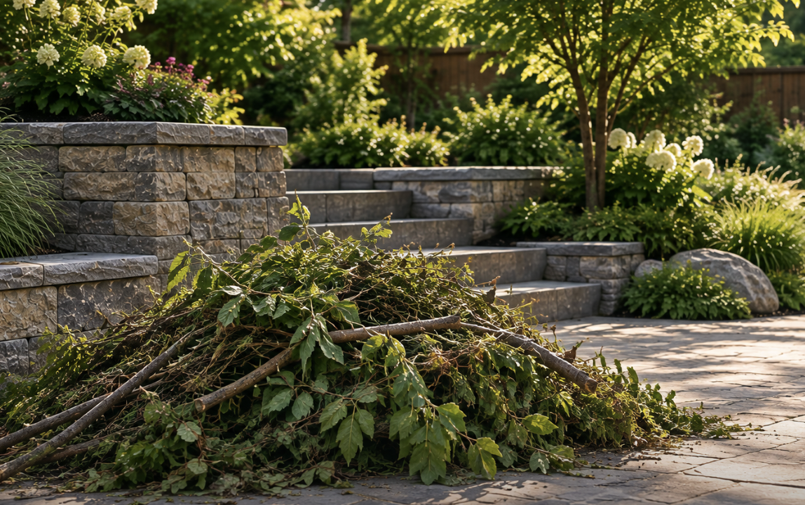
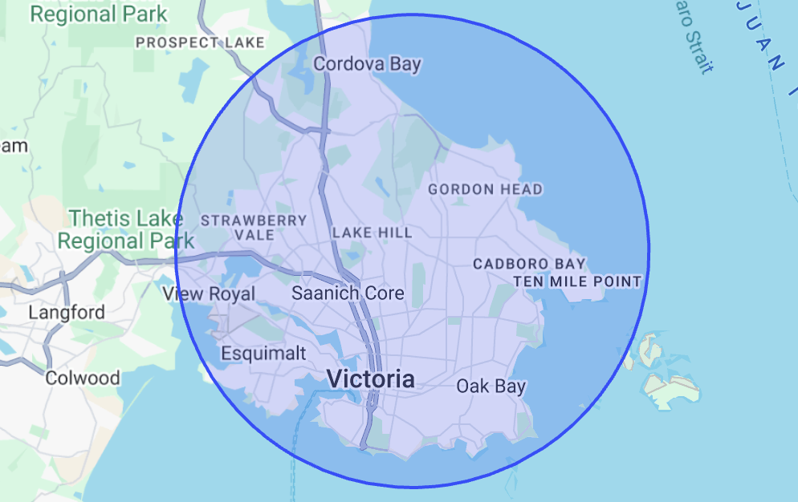

![]()
A small crew that plants, prunes,
builds and looks after gardens
in and around Victoria.
Macaw is Santi and Rhys. We've been keeping gardens on the South Island since 2019, and we're the ones who turn up — there's no crew we send instead. We quote in writing before we start, we keep the site tidy while we're on it, and we answer the phone.
Most of the work is regular maintenance for homes in Victoria, Oak Bay and Saanich, with planting and small stonework jobs in between. Most of our clients found us through a neighbour.

SantiPlanting, design and quoting. 
RhysStonework, walls and paths.
Recent work
Oak Bay — patio, steps and new beds Fairfield — front garden replant Saanich — cleanup and gravel path Gordon Head — rock bed and new planting James Bay — bamboo out, lawn back Cadboro Bay — mulched beds and hedge trim
What we do
-

Garden maintenance
Mowing, edging, pruning, weeding and bed care on a weekly, fortnightly or monthly visit. We adjust the schedule to the season, not the calendar.
-

Planting and garden design
New beds, borders and refreshes of tired ones. We favour plants that suit a wet winter and a dry summer, so the garden holds up without constant watering.
-

Patios, paths and retaining walls
Paver patios, gravel and flagstone paths, small retaining walls and steps. Built to drain properly and stay level.
-

Cleanups and hauling
Spring and fall cleanups, overgrown lot resets, hedge reductions and green-waste removal. One visit, everything gone.
Where we work
Victoria, Oak Bay, Saanich, Esquimalt, View Royal, Langford, Colwood, Sidney and the Saanich Peninsula. Further up-island by arrangement for larger projects.

Trusted by clients
-
Macaw Landscaping has been doing gardening work for us for approximately a year, and we are very happy with the various jobs they have been doing for us.
-
So pleased with the service! They did a great job, were so easy to get along with and went out of their way to make sure we were happy with the mulching of our garden beds! Highly recommend.
-
I was lucky enough to have the Macaw team visit my neighbourhood this summer. From beginning to end super professional. Would highly recommend.
Get in touch
Tell us about the property and what you have in mind. We read everything that comes in and reply within two business days.
(250) 555-0142 hello@macawlandscaping.ca